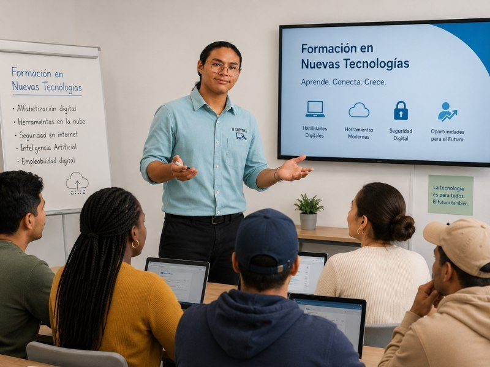

تكوين رقمي مجاني · الورشة 1 من 6
مدخل إلى التكنولوجيا: الهاتف الذكي والإنترنت والبريد الإلكتروني
الاثنين 23 نوفمبر 2026 · من الساعة 17:00 إلى 19:00 (بتوقيت جزر الكناري)
ورشة عملية عبر الإنترنت تقدّمها مؤسسة Cibervoluntarios بدعم من حكومة جزر الكناري وبالتعاون مع Ubuntu Canarias. املأ الاستمارة للتسجيل.
- عبر الإنترنت
- ساعتان
- مجانًا
- شهادة مشاركة

سنرسل لك رابط الدخول إلى الجلسة عبر البريد الإلكتروني أو واتساب. لا يلزم التسجيل في الورشات الست كلها: اختر ما يهمك منها.
ورشات أخرى من هذه السلسلة
- 2.تعرّف على البوابات والمنصات الإلكترونية لمساعدة المواطنينالجمعة 4 ديسمبر 2026 · من الساعة 17:00 إلى 19:00 (بتوقيت جزر الكناري)سجّل
- 3.الإدارة الإلكترونية: المعاملات والإجراءات في جزر الكناريالاثنين 7 ديسمبر 2026 · من الساعة 17:00 إلى 19:00 (بتوقيت جزر الكناري)سجّل
- 4.تطبيقات للمعاملات اليومية: miSCS والبنك الإلكتروني والتسوق عبر الإنترنتالخميس 10 ديسمبر 2026 · من الساعة 17:00 إلى 19:00 (بتوقيت جزر الكناري)سجّل
- 5.التواصل عبر الإنترنت: شبكات التواصل الاجتماعي والمراسلة ومكالمات الفيديوالاثنين 14 ديسمبر 2026 · من الساعة 17:00 إلى 19:00 (بتوقيت جزر الكناري)سجّل
- 6.الأمان على الإنترنتالخميس 17 ديسمبر 2026 · من الساعة 17:00 إلى 19:00 (بتوقيت جزر الكناري)سجّل